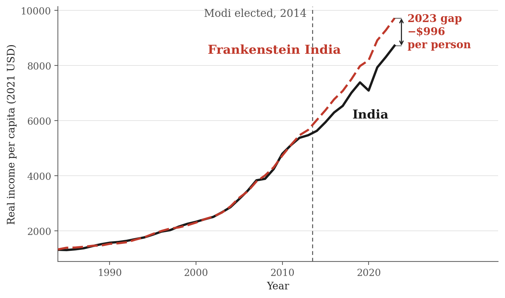
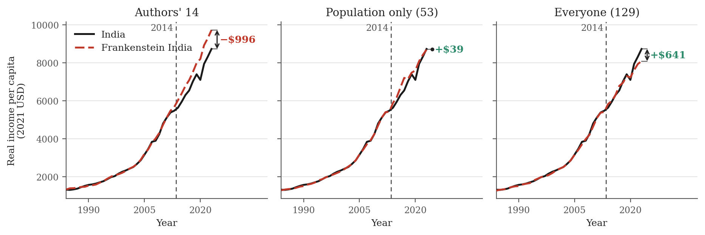
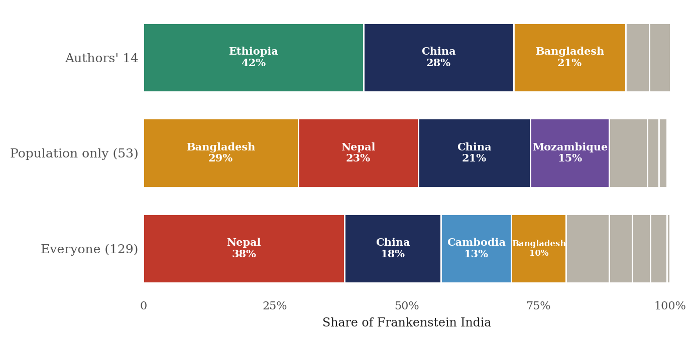
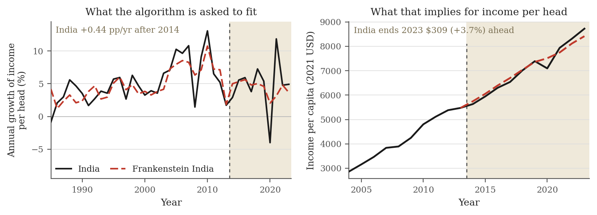
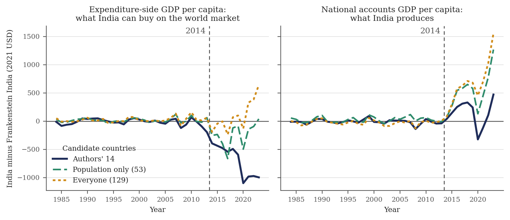
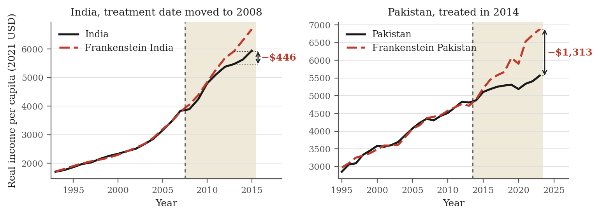

What you compare is what you get: Did Modi cost Indians $1,000 a year?
On the growth results in Grier and Grier (2026)
Grier and Grier just published a working paper on India’s performance under Modi. They use the synthetic control method to compare India to a weighted mix of other developing countries, and they report two findings: India’s governance indicators deteriorated sharply after 2014, and India’s income per capita ended 2023 roughly $1,000 below where the comparison case says it should have been.
I personally sympathise with the authors’ conclusions, but I do not think that their method convincingly shows that India grew more slowly under Modi than it would have grown without him. I show that fixing any one of three design issues in the paper is enough to make India grow faster than its comparison group. However, the main issue is that the results of the paper are extremely sensitive to the choice of comparison countries and to the choice of GDP series, and are thus always arbitrary.
I should start by praising the authors for posting their full replication package publicly, before the paper was even published, which made this critique possible. In the same spirit, everything behind this post is in a replication repository : five Stata do-files that download the raw data, rebuild the authors' specification from it, run every alternative reported below, and check each number in the text against the estimate it comes from.
Introducing Frankenstein India
When we want to make a statement about the effect of something (such as Modi’s government) on another thing (such as economic growth), we always implicitly make a comparison. India’s real GDP per capita grew at 4.8% a year in the decade after Modi was elected in 2014. How do we conclude whether that is good or bad? Someone might say: India grew at 7.4% a year in the decade before he took office, so Modi cut the growth rate by two and a half percentage points. Someone else might say: Pakistan grew at 1.5% a year over the same ten years, so Modi added three points. Whether we compare India to itself in the past or to a similar country, the choice of comparison leads to vastly different answers.
If we really want to know what Modi did to India’s growth, we need to compare India to what would have happened without Modi. That counterfactual is never observed, so empirical researchers use a range of methods to construct something as close to it as they can.
In this paper, the authors use the synthetic control method to construct a counterfactual India. The idea is to take a bunch of countries similar to India and combine them in a weighted mix, called the “synthetic control group”. Let us just call it “Frankenstein India”. We are mixing a bunch of other countries to create an artificial entity that tracks India’s economic indicators as closely as possible until 2014. The authors give the algorithm a set of 14 candidate countries, and the algorithm builds Frankenstein India as, roughly speaking, 40% Ethiopia, 30% China, 20% Bangladesh, and a pinch of Pakistan and the Philippines.
By design, Frankenstein India behaves very similarly to India until 2014. The trick is then to compare actual India to Frankenstein India after 2014, and actual India grew more slowly. If we assume that without Modi, India would have continued along Frankenstein India’s path, we conclude that Modi caused India to grow more slowly.
Here is the whole paper in one picture. Frankenstein India, the red dashed line, tracks actual India, the black line, very closely until 2014. In 2014, Modi gets elected, and India starts to fall behind. By 2023, the gap is about $1,000 per person, or 11% of income — on the authors’ reading, the average Indian is $1,000 poorer today because of Modi.
{kind=link}

1. Who goes into Frankenstein India
So, how do we decide which countries make up Frankenstein India? There are two steps. The first step is to select a set of candidates, and in the second step an algorithm finds the combination of these candidates that best fits the data until 2014. Both of these steps, it turns out, matter a great deal for the results of the paper.
For the first step, the authors state that they picked 14 large developing economies. They do not justify why they picked these 14 candidates when many more countries could have been included. To show how this choice matters, I use two alternative criteria. The first is to use all 53 countries with a population above 20 million in 2013. The second is to use all 129 countries with available data in the Penn World Table. Both of these contain every single one of the authors’ 14 countries, so the algorithm is still free to build exactly the Frankenstein India the paper builds, if that really is the best fit. Everything else stays exactly as the authors wrote it.
If we allow the algorithm to choose among every country with more than 20 million people, the authors’ code would tell us that the average Indian today earns $39 more than they would have without Modi. If we allow every country with data, the average Indian earns $641 more than Frankenstein India. In the picture, Frankenstein India before 2014 looks basically the same in all three cases — in fact, the fit is better when we allow more candidate countries. After 2014 the trends diverge: India looks much worse than its synthetic twin (the paper), about the same (53 countries), or much better (129 countries).
{kind=link}

Why does the answer change so much? The reason for this is that the algorithm builds a different Frankenstein India depending on which countries it is allowed to choose from. The original Frankenstein India is made up mostly of Ethiopia, China and Bangladesh. Once we widen the pool, a few new countries walk in — Nepal, Mozambique and Cambodia — and the weights get redistributed among the rest. China and Bangladesh stay in, at quite different weights; Ethiopia, which was the single biggest ingredient at 42%, drops out entirely. Crucially, in all three cases, at least 80% of Frankenstein India is made up of three or four countries.
This has a big impact on the results. The assumption that is needed for us to get the causal effect of Modi is that the Frankenstein India we pick is exactly how India would have grown without Modi. But every country has its own shocks – institutional changes, natural disasters, growth stories – over the same time period. For each of these countries, we could tell its own growth narrative after 2014. We are basically comparing India to three of the fastest-growing countries in the world over exactly this period. Ethiopia, for example, had a state-led infrastructure build-out. China initially grew very fast, but then slowed down. Bangladesh grew steadily and saw considerable political upheaval. Nepal suffered from a devastating earthquake in 2015, and then had a decade of political instability. For some average of these countries to be a good counterfactual for India, we would need to assume that these shocks would have happened in India as well. But there is no reason to believe that this is the case — especially with so few countries making up Frankenstein India.
{kind=link}

In short: the comparison group matters a lot. We can reasonably pick Ethiopia, China, and Bangladesh and claim that Indians today are $1,000 poorer than they would have been without Modi. But we can also reasonably pick Nepal, China, Cambodia, and Bangladesh, and claim that Indians today are $641 richer than they would have been without Modi. How big the difference looks does not only depend on what Modi did in India. It depends on Xi Jinping’s policies in China, on how Ethiopia’s government spent its money, on whether Nepal had an earthquake, and on how changes in the fashion industry affected garment exports from Bangladesh.1
2. Growth rates instead of levels
Which of the three Frankenstein Indias is the right one? By the authors’ argument, it is the one whose weights best fit the data until 2014. But that fit is worth much less than it looks. It is very easy to fit a bunch of countries’ average GDP per capita to India’s GDP per capita, because most middle-income countries have relatively similar growth paths, and because any two series that trend upwards will correlate whether or not they have anything to do with each other: over 1984–2013, India’s income per head correlates above 0.9 with twelve of the 14 candidate countries, at a median of 0.96. That is simply what trending series do. A close fit before 2014 is therefore very weak evidence that we have found the counterfactual we need.
So let us fit something that does not trend: growth rates. If a country grows at about 5% per year, overall GDP will follow a trend, but the growth rate in a given year – sometimes 3%, sometimes 7% – does not trend and is much harder to predict from the previous year’s growth rate. So, instead of India’s income level, let the algorithm match India’s annual growth rate, everything else exactly as the authors set it. The fit is far worse than the level fit, which is what we would expect.2 The Modi effect flips: after 2014 India grows 0.44 percentage points a year faster than Frankenstein India, so that compounding forward from India’s 2013 income, the average Indian ends 2023 $309 richer than Frankenstein India rather than $996 poorer.
{kind=link}

3. Measuring and comparing GDP across countries
There is a second issue that matters a lot for the results of the paper: how we measure and compare GDP, or gross domestic product, across countries. GDP is the total value of all final goods and services produced in a country in a given year. Add up all cars built, all eyebrows threaded, and all software sold, and you get GDP.
When we want to compare GDP across countries and over time, we need to make two adjustments. The first is across time: prices rise, so we deflate each country’s GDP by its own price index, leaving the change in the volume of things produced. The second is across space: a dollar changed into rupees buys far more in India than in the United States, because whatever cannot be shipped across a border – a haircut, a bus ride, a month’s rent – is cheap wherever wages are low. Converting at market exchange rates would make India look far poorer than it is, so statisticians adjust for this using purchasing power parity, or PPP.
We need to adjust for both, but this is complicated because relative prices between countries move every year. Suppose India produces exactly the same things next year as this year – the same tonnes of rice, the same cars, the same hours of software – and the only thing that changes is that oil, which India imports, triples in price (for example because of an oil supply shock, or because the Indian rupee has devalued). What happened to India’s real GDP?
There are two defensible answers, and the Penn World Table publishes both. The first says that India’s GDP is the same as last year: the same rice, the same cars, the same software, so real output is flat. That is GDP at constant national prices, which values each year’s output at one fixed set of that country’s own prices. If you produce 5% more, the number goes up 5%. The second answer says India is poorer, because Indians can afford fewer things, as the price of oil in Indians’ consumption basket has increased. That is expenditure-side GDP at chained PPPs, which values output at the relative PPP prices of each year. This measure will record that India has become poorer, but that is unrelated to what the Indian economy produces.3
Which measure we want depends on the question. The authors ask whether the Indian economy grew more or less than under a different government. This is a question about production. Feenstra, Inklaar and Timmer (2015), who built the Penn World Table, are explicit about which series that calls for: “If the sole object is to compare the growth performance of economies, we would recommend using the [GDP at constant national prices] series.” However, the authors use the expenditure-side series in their paper.
It turns out that it makes a difference. I re-run the authors’ code, but change the GDP series to the one that Feenstra, Inklaar and Timmer recommend for growth comparisons. The fit in 2012 and 2013 is much better than in the published version, and even with the original 14 candidate countries for Frankenstein India, the 2023 gap goes from −$996 to +$471.
{kind=link}

Just like before, if we allow the algorithm to build Frankenstein India from more candidate countries, India comes out even better. In these six specifications (two GDP series crossed with three pools of candidate countries), the paper’s headline number is the only one that is negative – in all other cases, India comes out at least as good as Frankenstein India, and in some cases much better.
We can see that at least part of the apparent negative trend under Modi is an artefact by just looking at what happened before Modi came to power: under the paper’s series, a good chunk of the “Modi effect” is already there before Modi. The gap opens in 2012, and by the end of 2013, India is already $195 below Frankenstein India, a fifth of the eventual effect. On national accounts those same years show essentially nothing. So, what happened in 2012 and 2013? The rupee devalued a lot following an announcement by the Federal Reserve in May of 2013 — the “Taper Tantrum” . Rupees per dollar went from 46.7 to 58.6 in two years.4 Over 2011–13 Indian income per head grew 7.0% on the paper’s measure and 9.2% on national accounts; in 2013 alone, 1.7% against 5.0%.
Minor issues
There are many other issues with the synthetic control design in the paper.
Rounding moves the answer by $189. The authors’ main result depends on which data format is used in Stata. The replication output of the authors gives an effect of about negative $807 but when I rebuild it from the raw data, the effect is negative $996. The reason is that the authors’ panel is stored in Stata’s float format, which carries about seven significant digits, while my rebuild kept full precision. This minor perturbation to the data changes the weights, swaps Egypt out of the recipe for the Philippines, and changes the answer by one fifth of the full effect.
We can get the same result using 2008–2014. The authors do a placebo treatment for the year 2001 and find no negative effect. Let us instead pretend that Modi was elected in 2008 and create a Frankenstein India until then. By 2013, the last year before Modi took office, actual India is already $446 below Frankenstein India and by the end of 2014 the gap is $673.
The Modi treatment also works for other countries. If we run the same design on Pakistan, and pretend it was “treated” in 2014, we get a similar (and in fact a bigger) result – it looks like Modi hurt Pakistan, too. Pakistan ends 2023 $1,313 below its synthetic twin, 24% of Pakistani income, against 11% for India.
{kind=link}

The method gets even weirder when we look at institutions instead of economic growth. The authors also use the synthetic control method to look at governance indicators, and find that India under Modi is worse than Frankenstein India. But here, Frankenstein India makes even less sense: Why would we expect any weighted average of countries to have the same governance trajectory as India? The results are vacuous. Of course, if Modi’s government is less democratic, we will find that the causal impact of Modi on democracy is negative. I think that saying that Indian institutions had a worse trend under Modi than Argentina, Brazil, and Sri Lanka does not add anything at all. Here is an example: Clearly, the impact of German reunification on democracy in East Germany was that it became more democratic. But if we compare East Germany to a synthetic control group of Poland, the Czech Republic, and Slovakia (all of which democratized at around the same time), the synthetic control method would tell us there was no effect. That Indian institutions worsened after Modi came into power is an important finding in itself; anchoring it to other countries does not add anything.
Bottom line
The synthetic control method simply does not work for this question. What it does here is take one country and compare it to a weighted average of three or four others. Because national income series all trend upwards, and any two trending series correlate, it is easy to make that average track the treated country closely before the treatment year — and a close pre-treatment fit is also all the method offers as evidence that it has found the right counterfactual. What happens after the treatment year is arbitrary. It depends on whatever shocks hit the treated country over the following decade, and equally on whatever shocks hit each of the three or four countries that carry the weight, none of which have anything to do with the treatment. Whichever way those shocks happen to fall is what gets reported as the causal effect. That is why the answer here flips when we change the pool of candidate countries, the GDP series, or whether we fit levels or growth rates. The paper does not show that Modi cost Indians $1,000 a year.
-
Nepal and Bangladesh raise an even more direct issue: they are neighbours of India with substantial trade links, so changes in the Indian economy propagate to them. Suppose Modi’s government banned all exports. India would get poorer — but so would Bangladesh and Nepal, and India would look fine relative to Frankenstein India. ↩︎
-
The ingredients of the growth-rate Frankenstein India also look different: Vietnam becomes the largest single ingredient at 41%, Pakistan at 33%, China at 13% and Bangladesh at 11%; Ethiopia falls to 2%. ↩︎
-
This is not just a technicality. Over a decade or more, the two measures can look quite different. For example, at current prices and market exchange rates the EU economy went from roughly America’s size in 2000 to a third smaller by 2022; at PPP, from the same size to 4% smaller . ↩︎
-
Which, some argue , would be positive for growth because it makes Indian exports more competitive. ↩︎